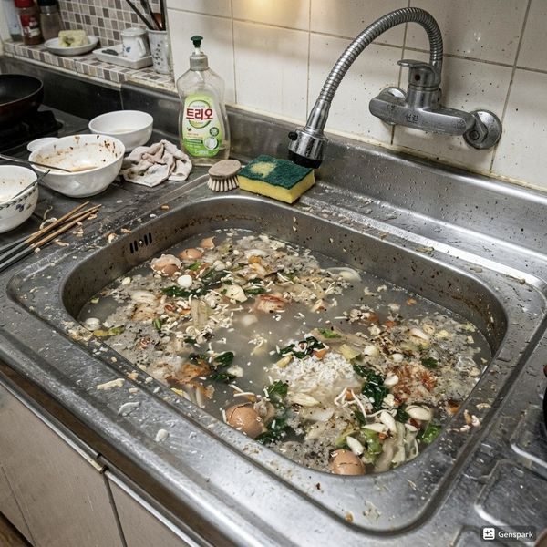
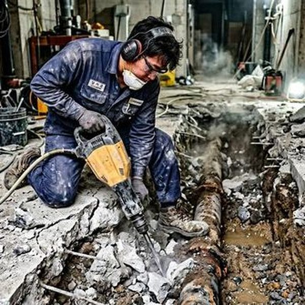
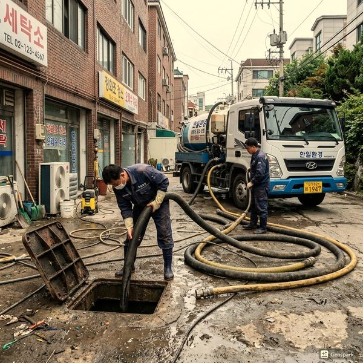

수전 종류와 특징
가정에서 사용하는 수전은 크게 단수전, 혼합수전, 센서수전으로 나뉩니다. 단수전은 냉수만 나오는 가장 기본적인 형태로, 세탁기나 베란다에 주로 설치됩니다. 혼합수전은 냉온수 조절이 가능하며, 주방과 화장실에 설치되는 가장 보편적인 형태입니다. 레버 방식과 투핸들 방식이 있으며, 최근에는 터치리스 센서수전도 보급되고 있습니다. 수전의 수명은 일반적으로 5~10년이며, 물이 새거나 레버 조작이 뻑뻑해지면 교체 시기입니다. 제우스시설관리는 모든 종류의 수전 교체 및 배관 연결을 전문적으로 수행합니다.

수전 교체 비용과 자가교체 시 주의점
수전 교체 비용은 제품 가격(3만~30만원) + 공임비(3만~8만원) 수준입니다. 단수전은 비교적 간단하여 자가교체가 가능하지만, 혼합수전은 냉온수 배관 연결과 실링 처리가 중요하므로 전문가에게 맡기는 것이 안전합니다. 자가교체 시 가장 흔한 실수는 배관 연결부의 테프론 테이프 감기 부족으로 인한 누수입니다. 또한 오래된 배관에서 수전을 무리하게 돌려 빼다가 배관 자체가 부러지는 사고도 빈번합니다. 이런 경우 수리비가 수전 교체비의 몇 배로 늘어납니다. 제우스시설관리에 맡기시면 28분 내 출동으로 안전하게 교체해 드립니다.

자주 묻는 질문
Q. 수전 교체 시 단수가 되나요?
A. 해당 수전의 앵글밸브만 잠그면 되므로 다른 곳의 수도는 정상 사용 가능합니다. 작업 시간은 30분~1시간입니다.
Q. 인터넷에서 산 수전으로 교체해 줄 수 있나요?
A. 네, 고객님이 구입한 수전도 설치해 드립니다. 다만, 기존 배관 규격과 호환되는지 사전 확인이 필요합니다.